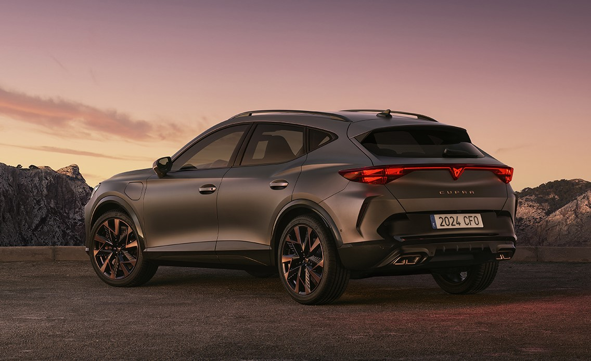
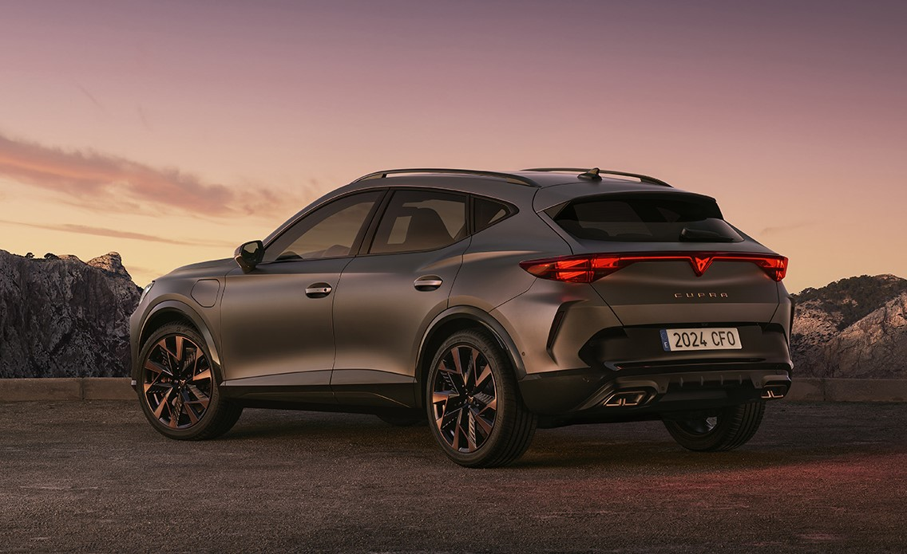

Cupra Formentor
Cupra Formentor, İspanyol üretici olan Seat tarafından performans odaklı alt markasında üretilen kompakt bir SUV'dur. Formentor modeli aynı zamanda Cupra'nın bağımsız bir marka haline geldikten sonra tanıttığı ilk özgün modeldir. Hem performans odaklı hem de sportif bir tasarıma sahip olan araç, sportif SUV segmentine girmektedir.
Formentor C-SUV dediğimiz kompakt SUV segmentinde bir araçtır. Kullandığı platforma bakıldığı zaman Volkswagen grubunun platformu üzerine inşa edildiğini görmek mümkündür. Bu platformu aynı zamanda Volkswagen Tiguan, Audi Q3 ve Seat Leon gibi modellerde kullanmaktadır. Karoser bakımından ise coupe-SUV olarak sınıflandırılabilir.
Geniş bir motor yelpazesine sahip olan Formentor'da ilk olarak giriş seviyesi motor seçeneği olarak 1.5 litrelik 150 beygir güç üreten bir motor bulunmaktadır. VZ olarak geçen 2.0 litrelik 310 beygirlik motor ise daha çok performans odaklı bir modelken aynı zamanda 4Drive denilen dört tekerlekten çekiş sistemi ve 7 ileri DSG şanzımanla sunulmaktadır. VZ5 modeli ise sınırlı sayıda üretilen 2.5 litrelik 5 silindirli bir motora sahipken 390 beygir güç üretmektedir.
Dış görünüşünde bizleri keskin ve agresif hatlar, büyük hava girişleri karşılıyor. LED farlar ve arkada boydan boya uzanan LED stop lambası da güzel bir görüntü sunuyor. Büyük alaşım jantlar genellikle 18-20 inç arasında değişiyor.
Yakıt tüketiminde ise benzinlide motor seçeneğine göre ortalama 6.5-8.0 litre yakarken hibrit olan motor seçeneklerinde hibrit moddayken 1.5-2.0 litre yakmaktadır.
Fiyat konusuna değinecek olursak 2024 itibari ile motor seçeneği ve donanımına bağlı olarak değişmekte olup 2.180.000 TL'den başlamaktadır. Hibrit ve performans versiyonları girdiği vergi dilimi dolayısıyla daha pahalıdır. Formentor'un rakiplerine bakıldığında Volkswagen Tiguan R, BMW X1/X2, Mercedes-Benz AMG GLA 35, Volvo XC40 Recharge gösterilmektedir.